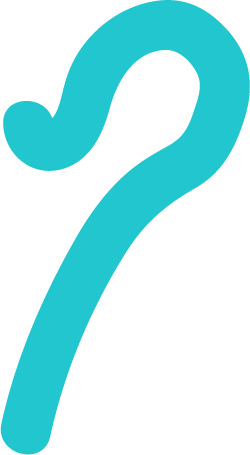
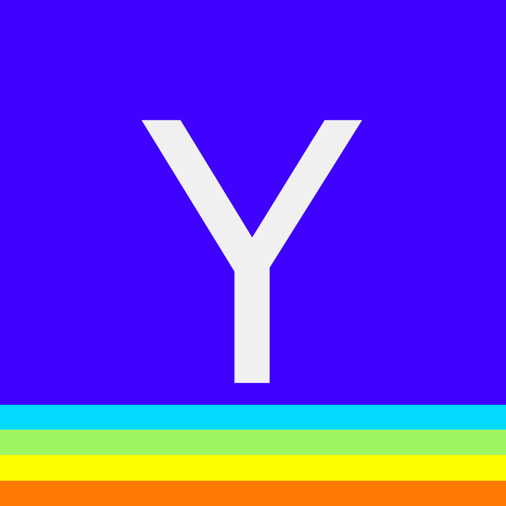
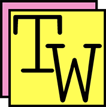

GitHub Repository: July 2018 - Present
HTML5
CSS
TypeScript
Angular
Marian is an Angular web app that allows you to visualize real-time stock data, generate a graph of net equity for each stock in your portfolio, and read the latest market and stock news. Marian is a counterpart to Robinhood and also stands on its own, as users can enter share data for each stock in their portfolio to see how it contributes to their net equity over time. Marian displays up to 20 years' worth of data for each stock, as it uses Alpha Vantage's global stocks API. It also gets real-time stock prices, company information, and market news from IEX's API. Marian's graphs are built from the amCharts library, and its search bar is powered by Algolia.
Marian
Pause
Flask

GitHub Repository: April 2018 - Present
HTML5
CSS
Sass
JavaScript
Python
AWS/RDS
Heroku
PostgreSQL
SQLAlchemy
Hacker News Stats is a display of statistics from data scraped from Y Combinator's news site, Hacker News. I use Requests, Beautiful Soup, and asyncio libraries to acquire and parse the first three pages of posts from the main Hacker News feed asynchronously. I then store the data in an Amazon RDS instance of PostgreSQL and serve it through a series of API endpoints that return statistics based on time period (e.g., `/api/hacker_news/stats/hour/average_comment_count` returns the average comment count for posts in the past hour, `/api/hacker_news/stats/week/top_website` returns the most common websites that articles were posted from). The Stats page displays various Highcharts visualizations of the scraped data, including a pie chart that shows a breakdown of the different types of posts, a word cloud of the most common words used in post comments (excluding stop words), and a bubble chart of the top five users who posted the most comments (with each bubble's width reflecting their total words used). Buttons at the top of the Stats page allow the user to toggle between different time periods of data (e.g., past hour, past day, past week).
Hacker News Stats
Flask
User Accounts
Flask
Apache
NoBugs!
Flask
Vicarious

GitHub Repository: Aug 2017 - Present
HTML5
CSS
JavaScript
Python
AWS/EC2
Linux
PostgreSQL
Thought Writer is a community post board for users to post short ideas for others to read and comment on. Posts are created through a What-You-See-Is-What-You-Get (WYSIWYG) text editor that allows users to save their posts to the public board and/or save their own private posts if they have a registered account. I originally created this text editor as a personal diary for the Ideas page, to document thoughts on programming, design, and life in general, then decided to make it communal as a public board for users to tack up ideas on. The name derives from a combination of "thought book" (an old diary I used to keep) and "typewriter."
Thought Writer
Flask
Apache
CanvaShare
Flask
Apache
Rhythm of Life
Flask
Apache
Shapes in Rain
Flask
Apache